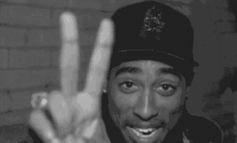

Corpus
About our Album Choice:
We picked two albums for both Tupac and Eminem (for a total of four albums that we are analyzing) that were all released in the 1990s. The qualifications in choosing the albums were fairly simple: they had to be written and released in the 1990s and the distinction between the two albums for each album was their certification. This certification is based on the number of copies the album sold. We used the RIAA (Recording Industry Association of America) certification categories, which are gold, platinum, and diamond. For gold certification in the United States, the album would had to have sold 500,000 copies, 1,000,000 for platinum, and 10,000,000 for diamond. In our analysis for this project, we wanted to compare what made an album “gold” worthy, for the lowest rank, and an album “platinum” worthy, for the highest rank. For Tupac, the two albums we picked were 2Pacalypse Now (gold) and All Eyez on Me (diamond). 2Pacalypse Now is his only album out of the five albums he released that was certified gold. The rest of Tupac’s albums were certified as platinum, except for All Eyez on Me, which was diamond. This album is also labeled as one of the greatest hip-hop albums of the 90s era. Out of Eminem’s discography in the 90s, he only had two albums released during this time period, so we used this two. His first album, Infinite, is gold certified and The Slim Shady LP is platinum (4 times over) certified. Eminem does have two diamond certified albums but those were released after 2000 so we chose to use The Slim Shady LP in our analysis even though it did not have the diamond certification. The main objective is to see why one album did not sell as well as the other by the same artist.
About the Factors Analyzed:
The factors that we analyzed that potentially could have contributed to the popularity and sales of the albums were the following: the presence of profanity, derogatory terms, emotion terms, and life events in the lyrics. We chose these variables as determining factors due to their relationship with how rap is structured and is embodied. Rap is like poetry and rappers like to tell their life story, such as Tupac and Eminem, in their lyrics. Emotion words are apparent in lyrics to describing the feelings of the rappers, which is another important thing for them to express in their songs. As for profanity and derogatory terms, these act as more of filler words to make the verse and overall lyrics flow better. We found that the higher rated certified albums (Tupac’s All Eyez on Me and Eminem’s The Slim Shady LP) had higher numbers of these factors within their songs in comparison to the gold certified albums. In some of the songs in the gold albums, none of these factors were present at all or only very little.